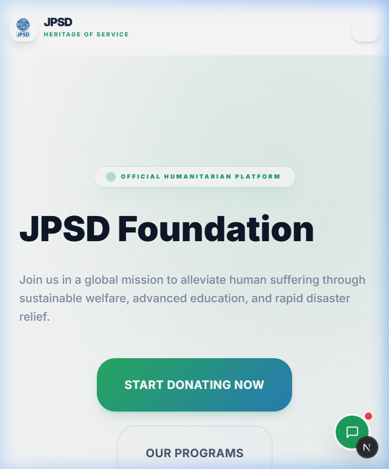
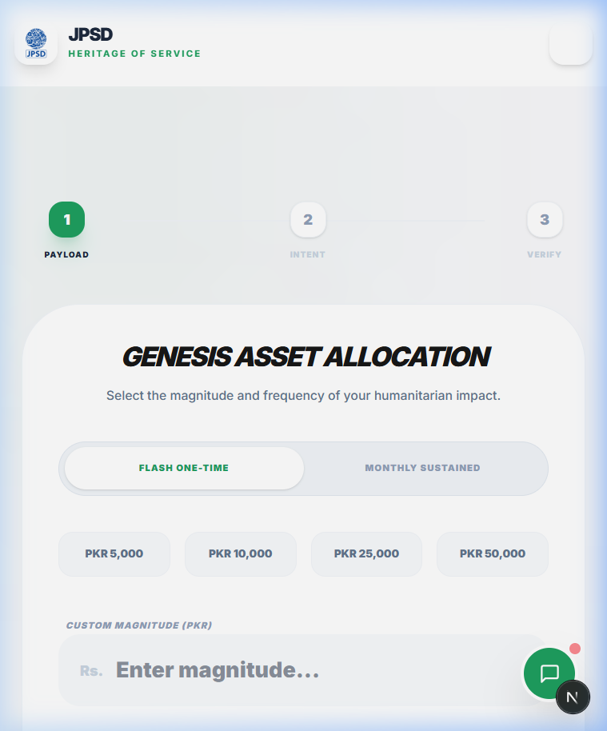
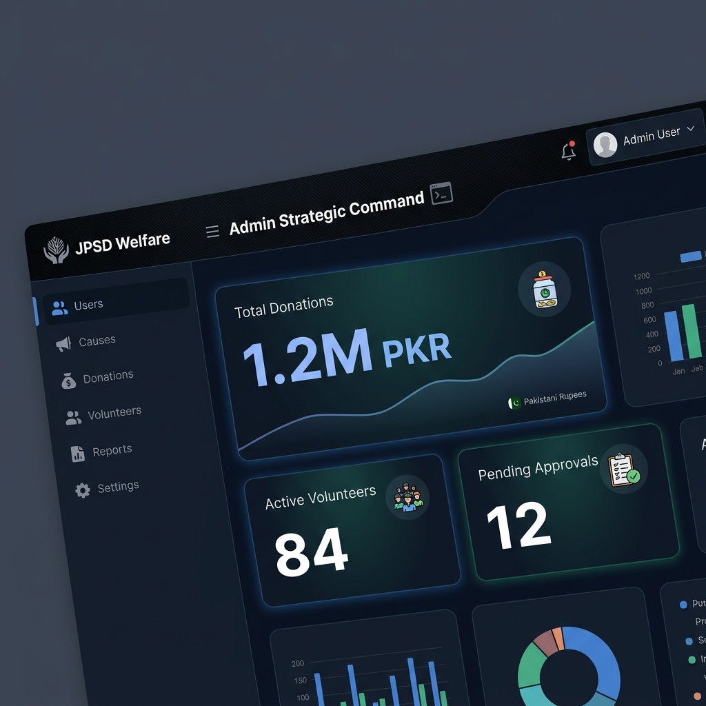
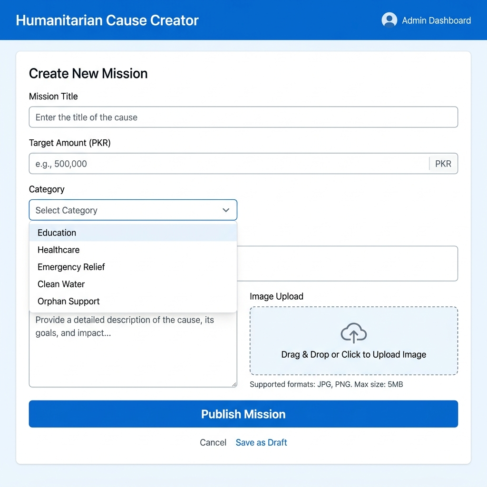
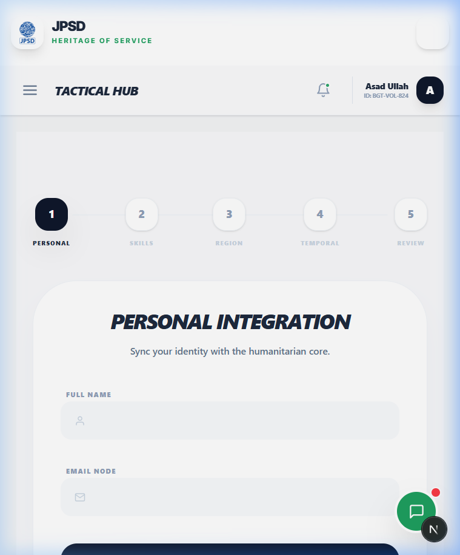
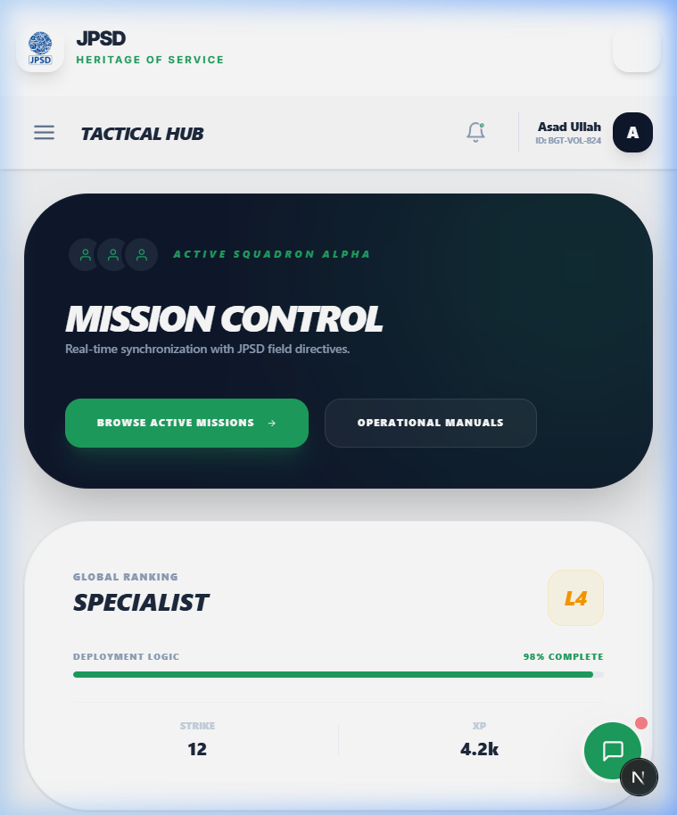

User Manual – Donor Guide
How to navigate, donate, and track your impact on JPSD
1️⃣ Getting Started
Website URL: https://jpsd.vercel.app/

Figure 1.1: JPSD Official Humanitarian Platform – Premium Homepage Hero SectionSupported Browsers: Google Chrome, Mozilla Firefox, Apple Safari, Microsoft Edge (latest versions recommended).
Language Toggle: Access the English/Urdu switch in the top-right corner of the header to localize your experience.
Account Policy: You can browse causes and make one-time donations without an account. However, creating a profile is recommended for impact tracking.
2️⃣ Making a Donation (Step-by-Step)
Contributing to a mission is a seamless process:
- Visit /donate: Click the "Donate" button in the navigation or visit jpsd.vercel.app/donate.
- Selection: Choose a predefined amount or enter a custom value.
- Choose Cause: Select the category (Food, Water, Health, Education, or Emergency).
- Payment Method: Select between JazzCash or EasyPaisa (Simulation Mode active).
- Identity: Fill in your name, email, and phone. Use the "Anonymous" toggle if you prefer privacy.
- Consent: Check "Receipt Consent" to receive an automated email confirmation of your contribution.
- Finalize: Click "Donate Now". You will be redirected to a premium success page.
- Post-Success: Download your PDF receipt immediately or share your impact on WhatsApp/Twitter.

Figure 1.2: Interactive Donation Selection and Cause Matching Logic3️⃣ Payment Methods Explained
| Method | Type | Functionality |
|---|---|---|
| JazzCash | Simulation | Direct wallet simulation. No real funds are deducted. |
| EasyPaisa | Simulation | Mobile banking simulation for humanitarian testing. |
| Test Numbers | Credentials | Use 03001234567 for Success and 03000000000 for Failure testing. |
What to expect: Upon completion, the system logs the transaction in our activity stream and generates a unique reference ID for your records.
4️⃣ Managing Your Donor Profile
Access your personal command center at /donor/dashboard:
- Donation History: View all past contributions with status filters (Pending, Verified, Completed).
- Analytics: View the impact of your funds across different missions.
- Bulk Receipts: Download consolidated tax receipts in PDF or CSV format.
- Recurring Status: Toggle your monthly contribution logic (Stub feature).
- Impact Score: Earn points for consistency, mission diversity, and total influence.
5️⃣ Bilingual Support (English/Urdu)
JPSD is built for global inclusivity:
- Toggle: Click the language icon in the navigation bar to shift the entire UI.
- Coverage: All public-facing pages (Home, Causes, Donate, Volunteer) are fully translated.
- Limitations: Advanced Administrative panels and certain technical logs remain in English for operational precision.
6️⃣ Troubleshooting & FAQ
- "My donation failed": Ensure you are using the correct simulation test numbers. Check your internet connection.
- "Where is my receipt?": Check your email Spam/Junk folder. Ensure "Receipt Consent" was checked during checkout.
- "Is my data secure?": Yes. We use Firebase Security Rules and zero real-world payment processing is live in this sandbox.
- "How do I track a specific cause?": Visit the individual cause page to see real-time progress bars and deployment updates.
7️⃣ Contact & Support
- Technical Issues: tech-lead@jpsd.org
- Donation Queries: support@jpsd.org
- Admin Inquiry: Use the Admin Guide for management-specific help.
Document Version: 1.0 | Last Updated: April 9, 2026 | Owner: JPSD Tech Team
Admin Guide – Management Manual
Authoritative guidance for JPSD administrators and tech leads
1️⃣ Admin Access & Security
- Login: Access the platform via
/loginusing authorized administrative credentials. - Permissions: Only identities with
UserRole.ADMINcan bypass security middleware for/admin/*routes. - Session Stability: Active sessions persist for 30 minutes. Re-authentication is enforced thereafter.
- Policy: Minimum 8-character passwords with alphanumeric and symbolic requirements.
2️⃣ Admin Dashboard Overview
Access your command center at jpsd.vercel.app/admin:

Figure 2.1: Admin Strategic Command Dashboard – Real-time Analytics & Intelligence- Global Metrics: Real-time cards displaying Total Donations, Active Volunteers, and Pending Approvals.
- Forensic Chronology: A condensed activity feed of recent system events.
- Quick Directives: Shortcuts to Create Causes, Approve Volunteers, and Export Intelligence.
3️⃣ User Management (/admin/users)
- Intelligence Filtering: Sort archives by Role (Donor, Volunteer, Admin) and Status (Active, Pending, Deactivated).
- Directives:
- Approve: Elevate pending identities to active status.
- Deactivate: Immediate suspension of system access.
- Edit: Modify roles, reset tactical credentials, and update metadata.
- Deletion Protocol: Soft-delete enforced. Record retention for 30 days before total purging.
4️⃣ Donation Management (/admin/donations)
- Forensic Audit: View all contributions with deep-scan filters (Date, Cause, Payment Engine).
- Signal Export: Generate production-ready PDF or CSV reports for financial reconciliation.
- Simulated Refunds: Mark transactions as refunded in the metadata without affecting real-time banking (Stub).
- Traffic Analysis: Monitor for suspicious donation clusters (Anomaly detection).
5️⃣ Cause/Mission Management (/admin/causes)
- Create: Initialize new missions with titles, descriptions, goals, and premium imagery.
- Lifecycle Control: Toggle status between
ACTIVE,PAUSED, andCOMPLETED. - Archival: Deletion archives the data, preserving historical donation integrity.
- Mission Linking: Connect causes to specific volunteer deployment IDs.

Figure 2.2: Mission Authorization & Real-time Content Editor6️⃣ Volunteer Approval Workflow (/admin/volunteers)
- Queue: Review the influx of field operative applications.
- Assessment: Verify skills (Medical, Tech, Logistics) and regional proximity.
- Governance:
- Approve: Grants access to the Volunteer Dashboard and Mission Hub.
- Reject: Triggers a feedback protocol for the applicant.
- Bulk Onboarding: Select and approve multiple operatives in a single operation.
7️⃣ Deployment Management (/admin/deployments)
- Initialization: Define deployment parameters (Skill Requirements, Target Location, Mission Start).
- Assignment: Query the approved pool for specific skill-sets and dispatch operatives.
- Telemetry: Real-time status updates via Firestore
onSnapshotlisteners. - Verification: Final admin sign-off triggers operative certificates.
8️⃣ Reports & Analytics (/admin/reports)
- Pre-sets: Instant visibility into Monthly Revenue, Impact by Cause, and Volunteer Hours.
- Customization: Build tailored reports by selecting specific forensic fields and formats.
- Scheduling: Automate report delivery via email (Stub UI).
9️⃣ System Settings (/admin/settings)
- Branding: Update site titles, logos, and global contact metadata.
- Simulation Mode: Global toggle for JazzCash/EasyPaisa sandbox states.
- Forensic Logs: Full-view of the
activity_logscollection with actor UID and action details.
🔐 Security Best Practices
- Credential Integrity: NEVER share admin keys.
- Session Cleanliness: LOG OUT immediately after operational completion.
- Anomaly Reporting: Report unusual system behavior to the Tech Lead immediately.
- Rotation: Rotate administrative passwords every 90 days.
Document Version: 1.0 | Last Updated: April 9, 2026 | Owner: JPSD Tech Team
Links: User Manual | Volunteer Guide
Volunteer Guide – Field Operative Manual
Complete tactical instructions for JPSD volunteers and field workers
1️⃣ Getting Started as a Volunteer
Joining the mission requires a 4-step registration at /volunteer/signup:
- Identity: Basic personal information (Name, Email, Phone).
- Specialization: Define your skill-set (Medical, Logistics, Teaching, Tech, or Emergency Response).
- Geography: Select your primary operational region (Karachi, Sindh, Northern Areas, etc.).
- Submission: Await administrator review for mission clearance.

Figure 3.1: 5-Step Field Operative Onboarding & Skill VerificationNotification: You will receive an email upon status escalation to "Approved".
2️⃣ Volunteer Dashboard (/volunteer/dashboard)
Once approved, your dashboard becomes your humanitarian hub:

Figure 3.2: Volunteer Tactical Hub – Mission Telemetry & Impact Metrics- My Missions: View your currently assigned deployments.
- Skill Match Score: Compare your specialization against live mission requirements.
- Impact Metrics: Real-time tracking of logged hours and deployments completed.
- Digital Recognition: Access your badges and certificates.
3️⃣ Browsing & Accepting Missions
Discovery: Filter the repository of active deployments by skill, region, and urgency.
Protocol:
- Review: Read mission descriptions, location data, and deadlines.
- Join: Click "Join Mission" to commit. Status shifts to "Assigned".
- Decline: If unable to participate, provide optional feedback for better future matching.
4️⃣ Check-In / Check-Out Protocol
Accurate timing is critical for impact reporting:
- Activation: Upon arrival at the mission site, click "I've Arrived". This logs your timestamp and coordinates.
- Telemetry: During the mission, use the "Submit Report" modal to update task progress.
- Completion: Click "Mission Complete" to check-out. The system auto-calculates hours worked.
5️⃣ Submitting Mission Reports
Documentation ensures mission transparency:
- Fields: Log tasks completed, hours worked (auto-filled), and mission notes.
- Evidence: Upload field photos (Stub feature; production deployment will store in Firebase).
- Locking: Reports are editable until verified by an Administrator, after which they are finalized.
6️⃣ Impact Tracking & Recognition
Your contributions are transformed into dynamic metrics:
- Logged Hours: Cumulative total of all verified deployments.
- Badges: Earn unique identifiers like "First Mission", "10 Hours", or "Emergency Responder".
- Certification: Eligible for a PDF Certificate of Excellence after 3 verified missions OR 20 hours logged.
7️⃣ Profile Management (/volunteer/profile)
- Metadata: Update contact info and emergency contacts.
- Skills: Refine your specialization as you gain more field experience.
- Availability: Set your operational status (Available / On Leave).
- Subscriptions: Opt-in for SMS or Email mission alerts.
8️⃣ Bilingual Support for Volunteers
- Language Switching: Toggle between English and Urdu using the header control.
- Local Content: All operative-facing instructions and logs are fully translated.
- Mission Data: Note that some admin-generated mission descriptions may remain in English.
9️⃣ Troubleshooting & Volunteer FAQ
- "Approval Status is Pending": Reviews typically take 24-48 hours. Ensure your profile is complete.
- "Check-In Failed": Refresh the browser and ensure connectivity. Manual log requests can be sent via support.
- "Where is my certificate?": Certificates are auto-generated at
/volunteer/certificateonce thresholds are met. - "Can I volunteer for multiple missions?": Up to 3 concurrent assignments are permitted.
🔐 Volunteer Code of Conduct
- Professionalism: Represent JPSD with integrity and empathy in the field.
- Privacy: Beneficiary data is confidential. NEVER share personal identifiers publicly.
- Safety: Report any field hazards to the Administrator immediately.
- Accuracy: Document your hours and tasks with 100% honesty.
Document Version: 1.0 | Last Updated: April 9, 2026 | Owner: JPSD Tech Team
Links: User Manual | Admin Guide